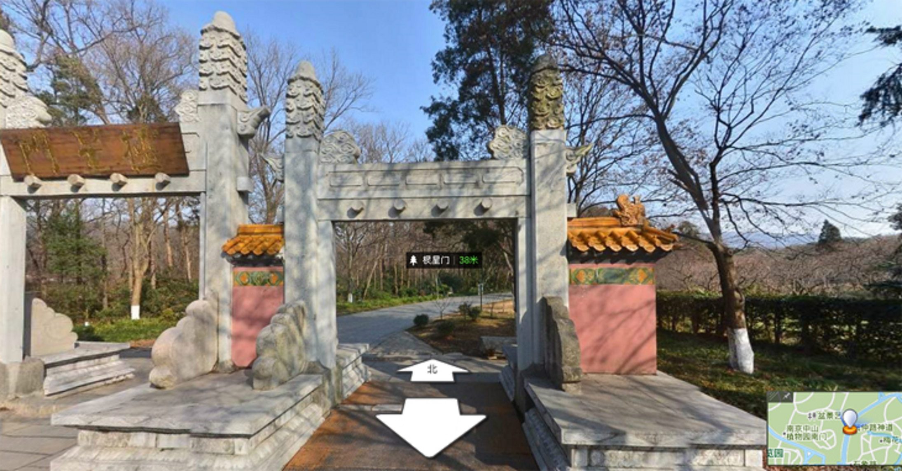

中山陵景区
票价：中山陵陵寝免费开放、音乐台10元/人、美龄宫30元/人
时间：08：30-17：00开放（周一关闭祭堂和墓室）
交通：乘坐南京地铁2号线至中山陵下马坊站下车，出站可换乘景区观光车或沿博爱路步行前往中山陵
乘坐南京公交34路或201路至中山陵停车场站
景点：中山陵、音乐台、美龄宫、流徽榭、孙中山纪念馆
中山陵园风景区地处南京市东部，是国家重点风景名胜区——钟山风景区的主体部分，面积31平方公里，因伟大的民主革命先行者孙中山先生安葬在此而得名。风景区浓缩了古都南京2000多年的发展史，以民国文化、明代文化、六朝文化为代表，以山水城林交融一体的自然景观为特色，以名胜古迹众多而享誉海内外；包括了中山陵、明孝陵和灵谷寺为中心的3大景区，拥有15处全国重点文物保护单位，31处省、市级文物保护单位，山环水抱，雄秀兼具，年接待游客量逾500万人次。
自1991年以来，景区先后获得“中国旅游胜地四十佳”、“全国爱国主义教育...
[查看全文]